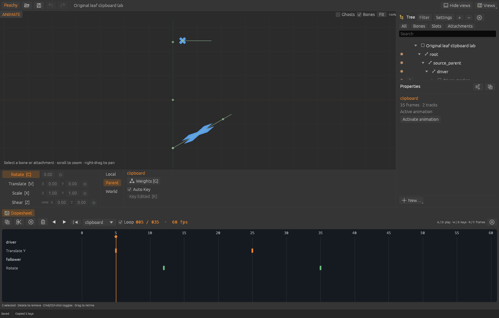
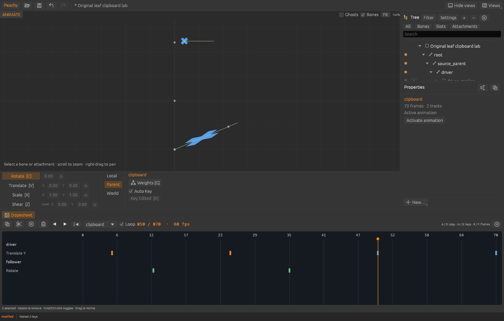
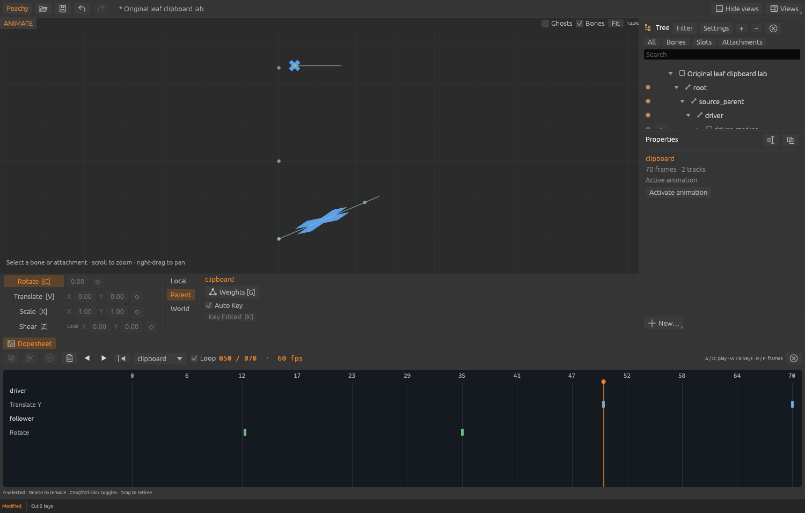
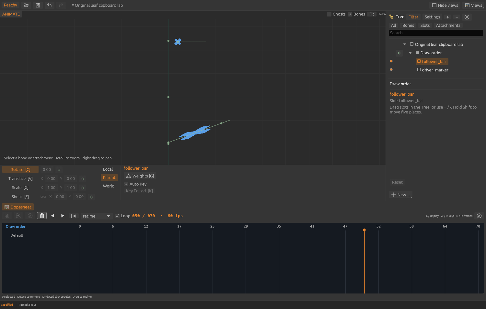
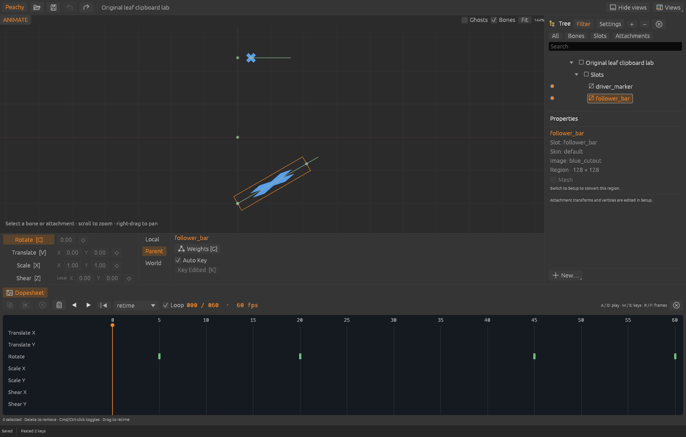
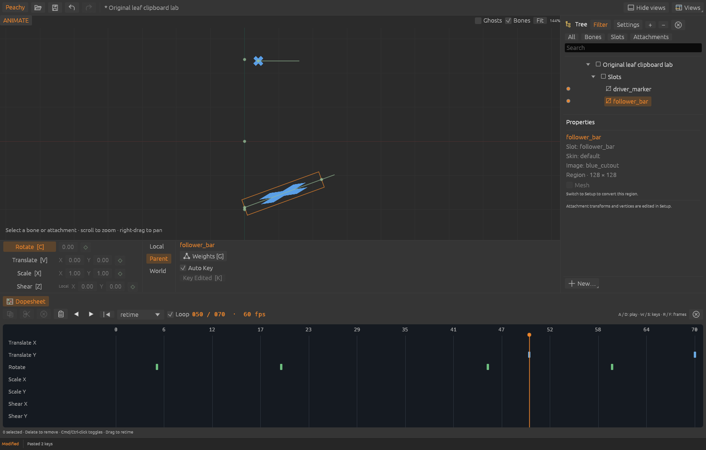
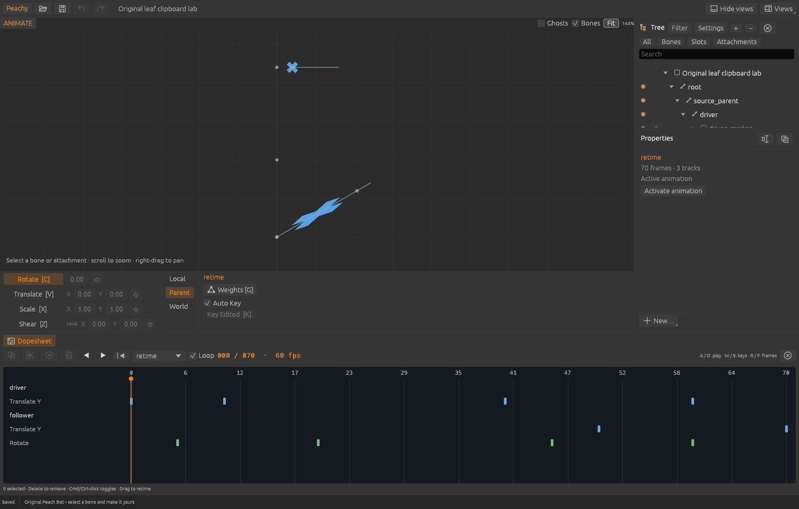

Copy from all-owner scope
Native input + unchanged v2 clipboard

Two original Driver keys are selected at Frames 5/25. Tree selects animation 0; no Bone owner is selected. Cursor 5.
November 15, 2026 · native v23 · 64 commands /19 MCP tools. Bounded native owner-routing and persistence acceptance passes. Original blue artwork is used throughout; installed Spine reference captures remain private. Full workflow and pixel parity remain open.
Scalar results and hashes · Measured contract and limits · Editable native/MCP result · Portable paste command · Grouped clipboard review
| Inspection | Verified outcome | Limit |
|---|---|---|
| Installed reference | No selected Bone returns to original Driver; explicit other Bone overrides; cross-animation works; selected Slot/Region uses its parent Bone. | Original six-bone/two-region fixture; licensed UI stays private. |
| Native OS input and exact state | All five typed Documents equal the independent MCP cases. Source selection survives Paste; Cut removes originals; Undo restores baseline. Region changes prune unrelated key selection. | Empty native pending baseline. Slot row scope and Region controls/styling remain different. |
| Actual MCP stdio | 71 requests from blank root/one PNG, 25 construction commands, five explicit target cases, two atomic negatives, 12 checked poses and exact history/persistence. | Headless explicit owners; no native selection or live GUI bridge. |
| Focused source checks | Ten leaf event/lifecycle regressions plus affected clipboard/Graph/timeline checks; fmt, all-target Clippy, build and architecture pass. | Filters overlap. Inactive/pending/remap cases are headless; final copy pass changes error wording only. |
| Persistence | Native and MCP saved bytes equal SHA256 5d432da2…eddde6d. Fresh reopen is exact, history/clipboard empty, one PNG loaded; old text cannot restore a receipt. | Same named fixture/final action; no general lossless Spine or external-runtime claim. |
Native v2 clipboard data stays portable. Its canonical source binding is editor state, with remap/tombstone and Open reset rules. General Tree multi-selection, compound Slot/Bone presentation, Shift/Offset, Lock/Sync and broader domains remain open.
Native input + unchanged v2 clipboard

Two original Driver keys are selected at Frames 5/25. Tree selects animation 0; no Bone owner is selected. Cursor 5.
Native input + complete typed Document

At cursor 50, the original Driver receives Frames 50/70. Original selected IDs and primary remain selected; the incoming two do not become selected.
Native input + exact Undo

Cut removes the original selected keys, leaving Driver 50/70 and the original Follower keys. Two Undo operations recover the entire baseline.
Native input + explicit presentation gap

The actual DrawOrderSlot row routes Bone keys to its parent Bone. The Tree row remains selected. Dopesheet still shows global DrawOrder scope; matching the native compound Bone/Slot presentation is future work.
Native input + owner scope

The selected Follower region scopes the timeline to Bone4 and clears the two unrelated Driver selections. This capture is at cursor 0, before paste.
Native input + complete typed Document

At cursor 50, Follower Translate Y receives 50/70. The result exactly matches the actual MCP document. Extra empty scalar rows, header styling and Region pose controls remain UI differences.
Native persistence + byte equality

The same named original fixture produces the same saved bytes in native UI and MCP. Fresh reopen has the exact full Document, empty history/clipboard and one PNG. Cursor 0.